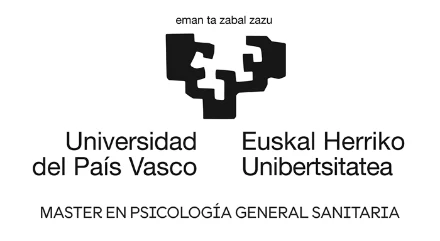
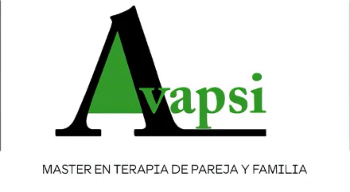

Errenteria, Gipuzkoa
Centro NutriGune
Pablo Iglesias Hiribidea
20100 Errenteria, Gipuzkoa
Te acompaño desde el respeto, la empatía y la aceptación. Consulta presencial en Errenteria y Vitoria-Gasteiz.
Estoy aquí para acompañarte y guiarte en tu proceso terapéutico. Mi objetivo es crear juntos/as un espacio de respeto y aceptación donde te sientas seguro/a, atendido/a y cuidado/a.
Trabajo desde un enfoque sistémico e integrador, centrado en lo relacional. Lo fundamental para mí es ejercer mi profesión acorde a mis valores. Para ello, mi foco siempre está en ti, adaptando y personalizando el proceso a tus necesidades.


Errenteria, Gipuzkoa
Pablo Iglesias Hiribidea
20100 Errenteria, Gipuzkoa
Vitoria-Gasteiz, Álava
Plaza Amárica, 4, 4ºF
01005 Vitoria-Gasteiz, Álava
Envía tu solicitud y la confirmaré lo antes posible. Recibirás un correo cuando la cita quede aceptada.
¿Prefieres hablar antes de reservar? Escríbeme por WhatsApp.
¿Tienes otra duda? Escríbeme.
No hace falta estar «muy mal» para empezar. Si algo te preocupa, te hace sufrir o sientes que se repite y no sabes cómo cambiarlo, es un buen momento para consultarlo.
Es un primer encuentro para conocernos: me cuentas qué te trae a consulta, resolvemos dudas y valoramos juntas/os cómo plantear el proceso y los objetivos.
Las sesiones duran aproximadamente 50-60 minutos. Al principio suelen ser semanales o quincenales, y la frecuencia se adapta según avanza el proceso.
Depende de cada persona y de lo que se trabaje. Lo iremos revisando juntas/os a lo largo del proceso para ajustarlo a tus necesidades.
Es una forma de entender a la persona dentro de sus relaciones (familia, pareja, entorno). No se mira el problema de forma aislada, sino cómo se relaciona con tu historia y tus vínculos.
Lo ideal es que acudan ambas, pero también se puede empezar de forma individual si la otra persona no puede o no quiere en ese momento.
Sí. Todo lo que se trate en sesión está protegido por el secreto profesional y el código deontológico de la psicología.
Avísame con al menos 24 horas de antelación por WhatsApp o desde el enlace de tu reserva y buscamos otro hueco.
Escríbeme y te responderé lo antes posible. Si prefieres algo más rápido, también puedes hablarme por WhatsApp.
Escríbeme por WhatsApp